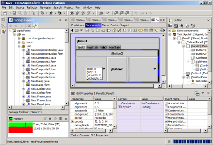

Jigloo SWT/Swing GUI Builder for
Eclipse and WebSphere
 Current
version: 2.5.0, released Feb 3rd 2004 (Component palette, Anchor
dialog, support for customizable JavaBeans, extraction of part of
form,Delphi-style layout modes for SWT and Swing GUIs,
snap-grid, alignment options, drag-copy-drop in Outline view and
editor,
improved response,
support for SWT Dialog, all features available for
non-commercial use, several bugs fixed, quick-set of properties on
creation of components,
support for SWT on Macs). |
Features
Requirements
Jigloo
has been tested successfully on the Windows and Linux (GTK) platforms
with Eclipse 2.1.2 and 3M6.
On the
Mac OSX platform it can be used to generate SWT GUIs (Swing GUIs
cannot be built on a mac as yet).
It has
not been tested on other platforms, but may perform successfully
on them.
The Jigloo GUI builder offers the
following features:
Basic:
By downloading, installing and using Jigloo you are agreeing to the following license terms:
|
|
Note for Non-US users: You can still use PayPal, but you need to open a PayPal account to do so. To open an account, you can go to the following page on the PayPal site: https://www.paypal.com/cgi-bin/webscr?cmd=_international-register and then come back to this page to purchase a license.